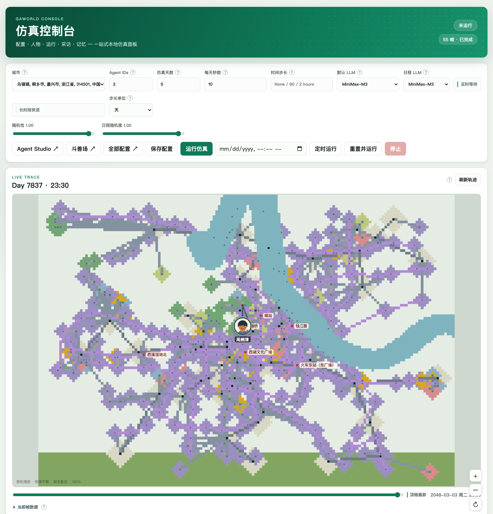

仿真运行与时间尺度¶
一次仿真使用选定的居民、城市与模型配置，推进居民行动，并记录状态、记忆、关系和环境变化。
开始前完成模型配置，确认城市、当前世界和参与居民；先用少量居民验证流程。
设置运行范围¶
在仿真页面选择居民，设置时长与模型，然后保存配置。先完成一次短运行，确认居民、环境和模型输出符合实验设置，再增加运行规模。
设置 |
作用 |
|---|---|
居民选择 |
决定参与本次运行的智能体 |
仿真时长 |
决定推进多少天、月或年 |
默认模型与日程模型 |
决定行动和日程所使用的后端 |
长时段快进 |
将日内细节压缩为阶段简报 |
步长单位 |
在快进中选择天、月或年 |
随机性 |
调节快进模式中的突发事件频率与状态波动 |


运行参数集中在控制台顶部；长时段快进与步长单位在同一区域设置。 点击图片查看完整尺寸。¶
启动、观察与停止¶
点击启动后，在日志中查看运行进度。轨迹回放展示居民位置与移动，居民详情展示状态、记忆和关系。
需要结束当前运行时，使用控制台的停止操作。查看最后的日志与已保存结果，再决定下一次运行的参数。
长时段快进¶
研究长期变化时，在工具栏开启 长时段快进，选择步长单位和时长。快进以每位居民的阶段简报推进状态、目标和关系。
时间尺度 |
运行方式 |
|---|---|
日内行动 |
常规仿真，按日内时刻推进 |
数十天到数百天 |
按天快进，每天生成日简报 |
月度变化 |
按月快进，每月生成阶段简报 |
年度变化 |
按年快进，每年生成阶段简报 |
时间尺度决定输出的细节层次。对照实验中的各组使用相同的步长与快进设置。平行世界的 fast 则控制确定性认知与每日总结，具体差异见 快速模式与长时段快进。
命令行运行¶
完成模型配置并选定城市后，在工作区执行：
gaworld run --sim-days 1
按天快进和按月、年推进：
gaworld run --sim-days 60 --fast-forward
gaworld run --sim-months 24
gaworld run --sim-years 10
群体模式¶
需要研究人口分布时，可以按属性将居民组织为 cohort（群体），再选择重点个体进行更细的模拟。群体模式保留群体均值与离散度；个体的完整行动轨迹使用个体模式查看。
独立群体模拟可先用无模型模式检查流程：
python -m gaworld.group --size 500 --days 7 --no-llm
群体划分、网络耦合和近似误差的验证方法见仓库的 群体模拟说明。
运行中施加干预¶
通过 Python 与 HTTP 接口 可以向当前运行提交干预。例如调整居民状态后，在日志与状态历史中检查其后续变化。做条件比较时，使用 平行世界 保存共同基线和各组设置。
运行结束后¶
完成后检查¶
在日志中确认居民数量、时间尺度和进度。结束后查看本次运行的轨迹与状态文件；常规模式重点查看行动过程，快进模式重点查看阶段简报和状态变化。
从点击运行到第一条记录¶
保存表单后，runs.start_simulation() 读取当前配置并启动子进程；run_simulation() 加载居民、装配插件，再进入日内管线。居民一次行动完成后，状态与记忆模块更新数据，visualizer 保存可回放的帧。排查时依次看启动日志、居民编号、模型调用和输出目录，可以判断问题发生在配置、执行还是记录阶段。
代码结构与执行流程¶
模块分工¶
源码位置 |
职责 |
|---|---|
运行参数表单、启动与停止操作、状态轮询和日志显示。 |
|
校验运行请求、管理排队与名额、启动和停止仿真子进程。 |
|
run_simulation() 装配运行环境并推进主循环。 |
|
StagePipeline 定义每个居民的认知阶段执行顺序。 |
|
规划日、月、年跨度，生成阶段简报并应用状态变化。 |
|
提供保持输入顺序的并发映射工具。 |
|
装配内置插件，将经济、技能等机制接入生命周期。 |
执行流程¶
运行表单 → runs.start_simulation() → 仿真子进程
→ run_simulation() → 常规认知管线 / 快进阶段
→ 插件更新与记录 → 日志、状态、记忆和轨迹
网页运行由 runs 管理子进程，命令行则直接进入仿真入口。常规运行按日内时间点执行居民认知与行动；快进由 _fastforward.py 提供跨度规划和简报逻辑，主循环负责钩子调用与持久化。独立群体模拟使用 gaworld/group/ 下的另一套入口。
从哪里修改¶
调整启动、排队或停止行为查看 apps/runs.py；调整认知阶段查看 sim/pipeline.py 及其阶段实现；调整长时段简报查看 _fastforward.py。新增机制通过插件接入，开发步骤见 编写插件。